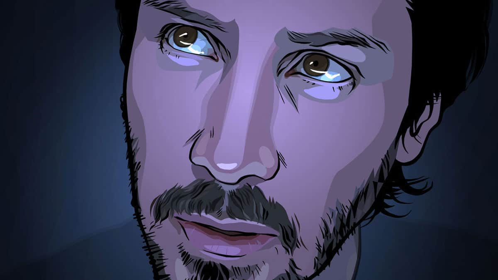
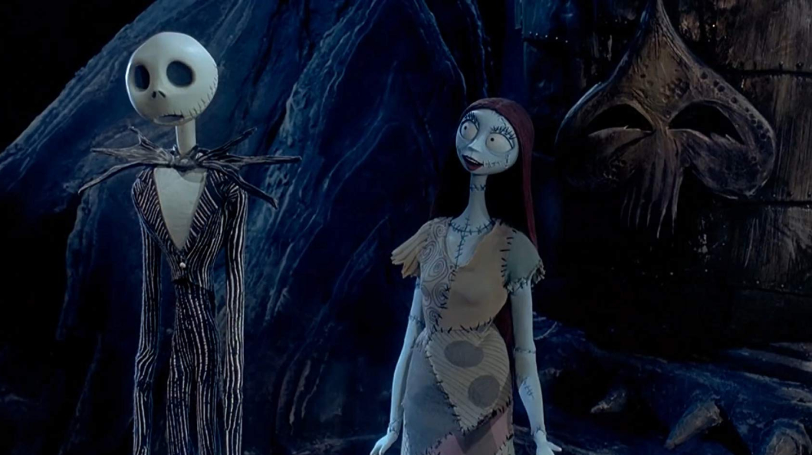
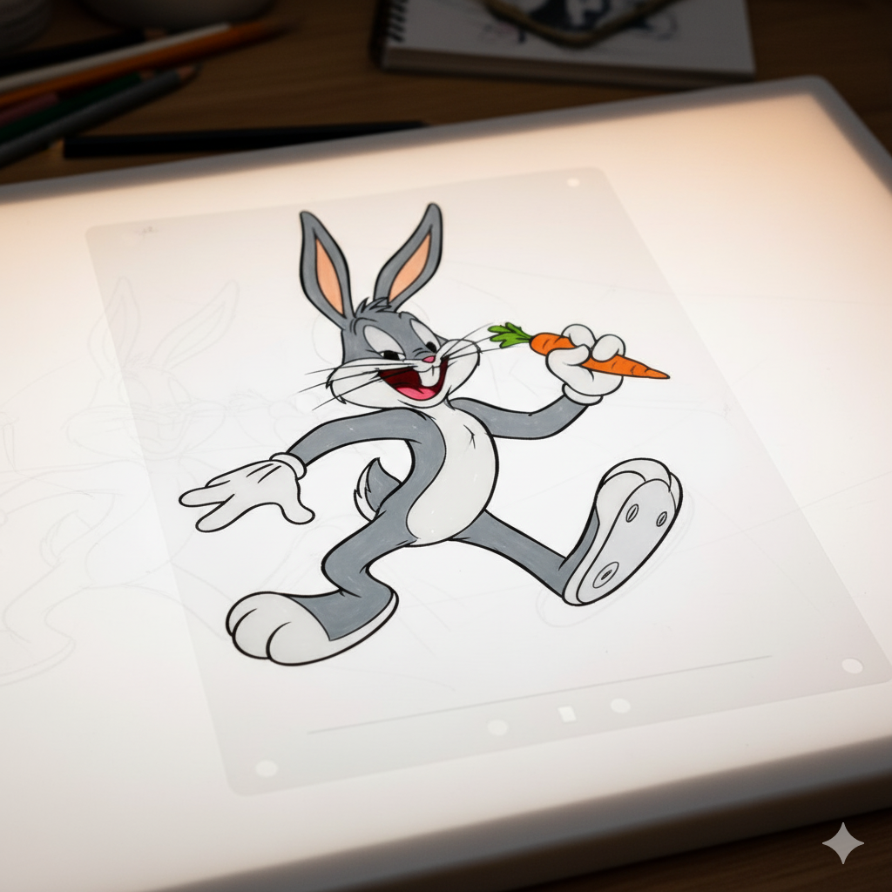
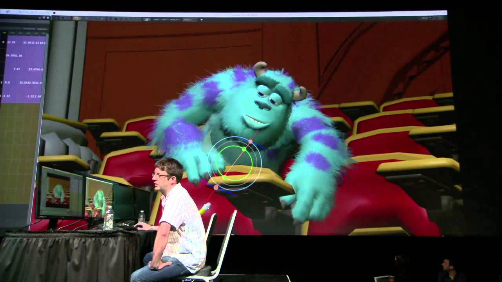

Técnicas de Animação
-
Rotoscopia
Técnica onde os animadores desenham por cima de quadros de filmagem de atores reais para criar movimentos fluidos e realistas. Usada em filmes como "A Scanner Darkly".
 -
Stop Motion
Animação quadro a quadro de objetos físicos ou bonecos. Cada pequeno movimento é fotografado para criar a ilusão de movimento. Clássicos como "O Estranho Mundo de Jack" usam essa técnica.
 -
Animação 2D Tradicional (Celuloide)
O método clássico onde cada quadro é desenhado à mão em folhas de acetato transparente (cels). Foi a base da Era de Ouro da animação.
 -
CGI (Computação Gráfica)
Animação gerada por computador. Hoje é a técnica dominante na indústria, popularizada por estúdios como a Pixar, permitindo a criação de mundos e personagens tridimensionais complexos.
